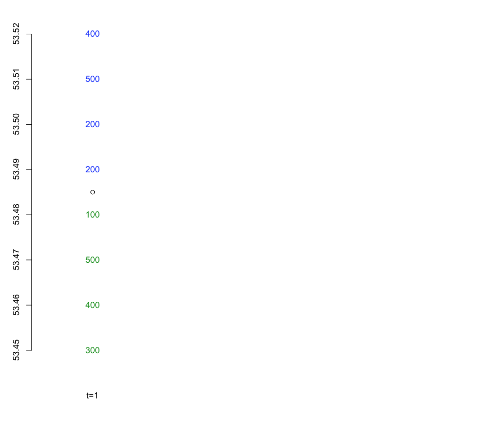
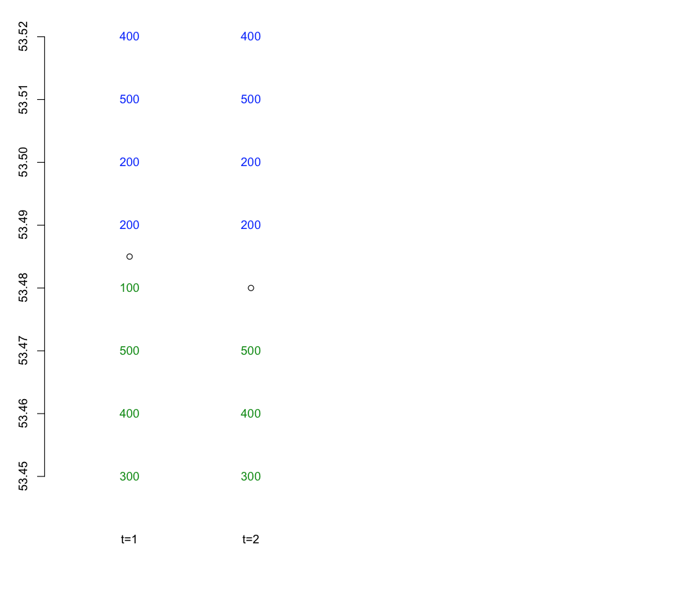
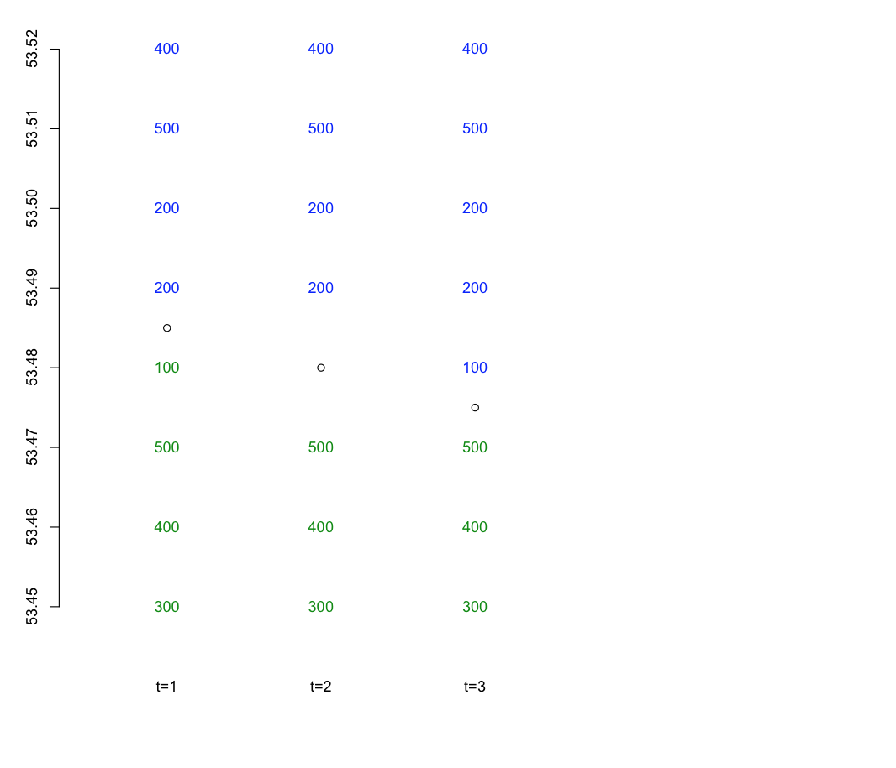
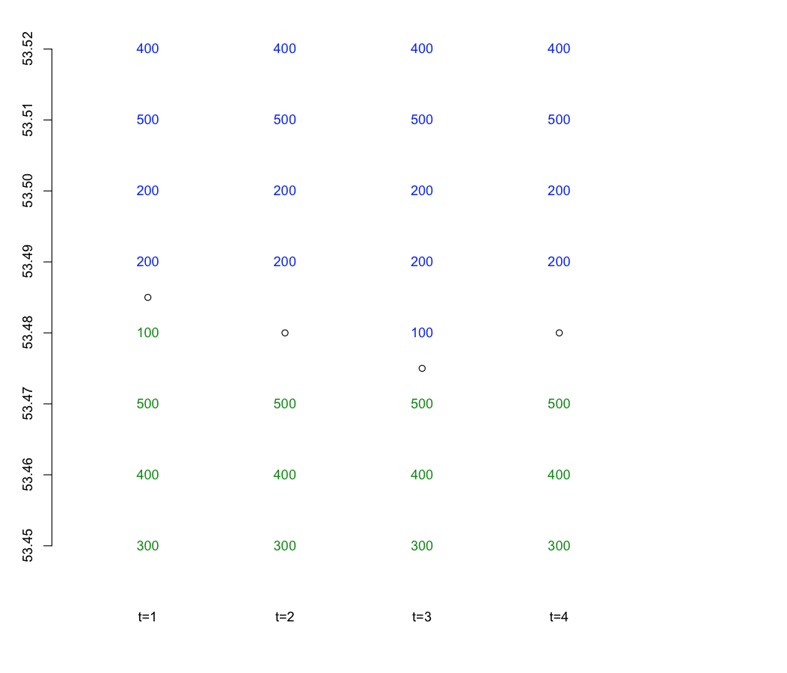
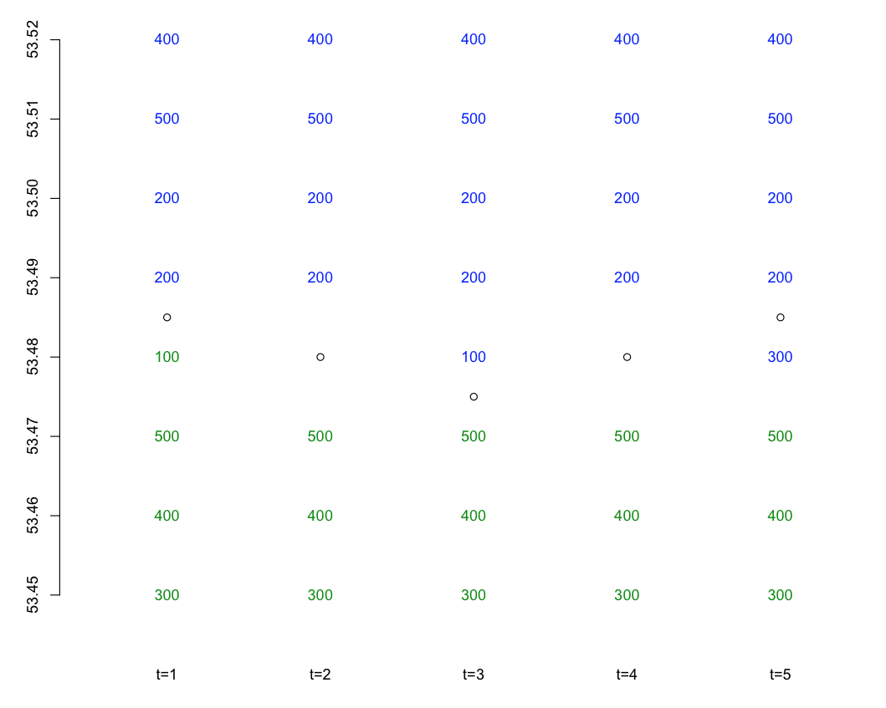

Trading
Exchanges
Most financial assets today are traded on exchanges.
- The first stock exchange, the Antwerp Bourse, was established in Antwerp, Belgium in
1460.
- Others were established throughout Europe in the 1500s.
- The Amsterdam Stock Exchange merged with the Paris and Brussels
exchanges in 2000 to form Euronext.
Early Trading
For centuries, trading of financial assets consisted of exchanging
physical certificates.
- The New York Stock Exchange was Conceived in 1792 under a buttonwood
tree on Wall Street.
- 24 brokers signed an agreement to exclusively deal with each other.
- They frequently met under the tree on Wall Street to conduct
business.
Electronic Trading
In the 1990s, several electronic exchanges were developed.
- These are often referred to as Electronic Communication Networks
or ECNs.
- Island was one of
the first ECNs, later purchased by Nasdaq.
- Archipelago
was developed at roughly the same time and was later purchased by
NYSE (hence the name, NYSE Arca).
High-Frequency Trading
Originally electronic systems were simply used for quoting and
displaying prices.
- Trades were still executed by hand on the trading floor.
- Eventually, traders started placing orders electronically.
- This led to algorithmic trading: traders not only submitted
orders electronically, but wrote software algorithms that
executed trades intelligently, depending on market conditions.
- Algorithmic trading has resulted in very fast execution, commonly
referred to as high-frequency trading.
Exchanges Today
Exchanges today no longer consist of open floors populated by traders
yelling at each other.
- They consist of large warehouses, populated by computer servers
that electronically match orders.
- These are referred to as matching engines.
- Since order execution speed is so important, many traders co-locate
their trading computers with the matching engines.
Exchanges Today
- The NYSE Arca matching engine is located in Secaucus, NY.
- The Nasdaq matching engine is located in Carteret, NJ.
Market Makers
Participants on exchanges include makers and takers.
- Makers are required to post both quotes to buy and sell assets on
the exchange.
- Quotes to buy are called ‘bids’.
- Quotes to sell are called ‘offers’.
- Typically there are many bids and offers posted on the exchange at
different prices.
- Market makers are compensated for providing quotes (also referred to
as providing liquidity).
Takers
Takers actively take orders that have been passively posted by
market makers.
- When a taker wants to buy the asset, the buy at the lowest posted
offer quote.
- When a take wants to sell an asset, they sell at the highest posted
bid quote.
- The difference between the highest bid quote and lowest offer quote
is known as the spread.
Order Book Example: time 1

Order Book Example: time 2

Order Book Example: time 3

Order Book Example: time 4

Order Book Example: time 5

Buying on Margin
When investors borrow money from a broker to purchase an asset, they
are buying on margin.
- The margin is the proportion of the purchase price provided by the
investor.
- The purchased securities are maintained in an account by the broker
and are monitored.
- The Board of Governors has limited initial margins to be 50% of the
initial purchase (i.e. investors must provide at least half of the
funds for asset purchase).
Margin Example
Suppose an investor has $6000 and would like to buy 100 shares of
asset \(W\), currently selling for $100.
- Since $10,000 is required for the purchase, the investor must
borrow $4000 from a broker.
- The initial balance sheet would be
| Assets |
Liabilities and Owners’ Equity |
|---|
| Value of Stock: $10000 |
Loan from broker: $4000 |
|
Equity: $6000 |
Thus, the initial margin is \(\frac{\$6000}{\$10000} = 0.6\).
Margin Example (Cont.)
If the stock price falls to $70 per share, the balance sheet
becomes
| Assets |
Liabilities and Owners’ Equity |
|---|
| Value of Stock: $7000 |
Loan from broker: $4000 |
|
Equity: $3000 |
The resulting margin is \(\frac{\$3000}{\$7000} = 0.43\).
Maintenance Margin
Brokers can set minimal margin requirements, known as maintenance
margins.
- If the asset value in the account falls too low, relative to
the loan from the broker, the broker can issue a margin call.
- This requires the investor to add cash to the account or liquidate
some the stock.
- If the investor doesn’t act accordingly, the broker then has
the right to sell some of the stock to pay off enough of the loan
to restore the margin to an acceptable level.
Maintenance Margin
For example, if a broker has a maintenance margin of 30%, the
lowest the price could fall before a margin call is
\[\frac{100P - 4000}{100P} = 0.3,\]
or P = $57.14.
Why Margins?
Margins have the ability to magnify upside returns.
- Suppose asset \(W\) is selling for $100 and an investor
believes its price will increase to $120 next period.
- If the investor buys $10,000 worth of stock, she will realize a
return of 20% on her money (after one period her net worth will be
$12,000).
Why Margins?
- However, if the investor borrows an additional $10,000 at 5%
interest, then she will earn a gross return of $4000 on the
$20,000 invested.
- After repaying $10,500 (loan plus interest), her net return will be
\[\frac{(\$24, 000 - \$10, 500) - \$10, 000}{\$10,000} = 0.35.\]
- So the investor was able to increase her return from 20% to 35% by
earning a return on borrowed money.
Why Margins?
While margins provide the ability to magnify returns, they also
increase downside risk exposure.
- Suppose that after borrowing $10,000 from the broker, the price of
asset \(W\) fell from $100 to $80.
- The investor’s gross return would be -$4000 on the $20,000
invested.
Why Margins?
- After repayment of the loan, the investor’s net return would be
\[\frac{(\$16,000 - \$10,500) - \$10,000}{\$10,000} = -0.45.\]
- If the investor hadn’t borrowed money, she would have realized a net
return of -0.2. So, by borrowing on margin she has magnified her
loss from -20% to -45%.
Short Sales
Short sales allow investors to profit from
declines in stock prices.
- To engage in a short sale, an investor borrows a share of a stock
from a broker and sells it on the market.
- The investor is then obligated to replace the share at a later date.
- If the stock price falls, the investor benefits from selling at a
high price and repurchasing at a low price.
- In between, the investor is responsible for paying the broker any
dividends that are realized (since the broker would have received
these if it hadn’t lent the stock).
Short Sales
- When an investor engages in a short sale, we say that they are
‘short’ the stock, or have taken the ‘short position’.
- Conversely, if an investor buys a stock (the usual transaction), we
say they are ‘long’, or have taken the ‘long position’.
Short Sale Example
Suppose asset \(W\) is selling for $100 and you think its price
will fall.
- You decide to borrow 1000 shares, selling them for $100 a piece,
yielding a total sale value of $100,000.
- If the stock price falls to $80 per share next period, you can
repurchase the 1000 shares for $80,000 and return them to the
lender.
- You earn a total of $20,000 in the process.
{kind=link}
{kind=link}
{kind=link}
{kind=link}
{kind=link}
{kind=link}
{kind=link}
{kind=link}
{kind=link}
{kind=link}